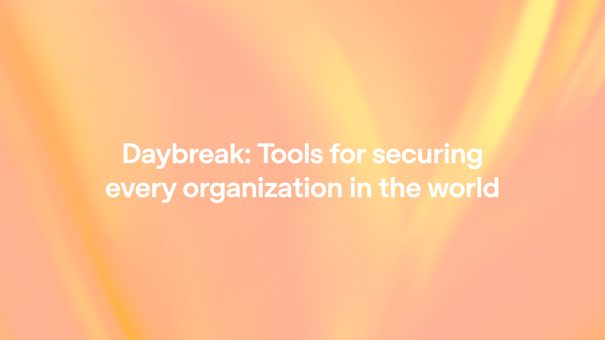

01 · OpenAI News
취약점 찾기에서 패치 자동화로

이번 발표의 중심은 새 보안 모델 하나보다, 보안 대응의 기준점을 ‘찾는 일’에서 ‘고치는 일’로 옮겼다는 데 있다. 오픈AI는 프런티어 모델이 대규모 코드베이스를 읽고 공격 경로를 추적하며 취약점을 찾는 능력이 높아졌다고 보고, 이제 수비 측 병목은 패치 처리량이라고 설명한다. 이에 따라 Daybreak를 취약점 발견, 검증, 수정, 배포 증빙까지 잇는 운영 체계로 확장했다. 함께 나온 기능과 파트너십도 모두 이 흐름에 맞춰 배치돼 있다.
원문이 말하는 핵심
오픈AI는 Daybreak를 통해 승인된 방어 조직이 취약점을 검증하고, 위험을 우선순위화하고, 수정안을 생성·테스트하고, 기존 보안·개발 워크플로 안에서 증빙까지 남길 수 있게 하겠다고 설명했다. 핵심 구성요소는 코덱스 시큐리티 플러그인 업데이트, GPT-5.5-사이버 정식 버전의 제한적 제공, 그리고 보안 파트너 프로그램이다. 취약점 리포트만으로는 보호가 완성되지 않으며, 실제 가치는 검증·영향 분석·패치 개발·테스트·공개 조율·배포에 있다고 선을 그었다. 발표 문맥 자체가 ‘더 많이 찾았다’보다 ‘끝까지 고칠 수 있나’에 맞춰져 있다.
무엇이 달라졌나
코덱스 시큐리티는 단순 경고 생성기가 아니라, 팀의 코드와 위협 모델을 이해하고 취약 가능성을 찾은 뒤 도달 가능성(reachability)을 판단하고 검증 증거를 모으고 패치를 제안·검증하는 흐름으로 소개됐다. 위협 모델이 없으면 생성할 수 있다고도 적었다. 개발자는 전체 코드베이스, 일부 범위, 특정 변경사항이나 커밋 단위로 스캔을 걸 수 있다. 결과 리포트에는 심각도, 영향 코드 위치, 검증 증거, 완화 가이드가 포함되며 공격 경로 추적과 코드베이스 맞춤형 패치 생성도 지원한다.
코덱스 시큐리티 운영 흐름
플러그인은 기존 스캐너, 보안 권고문(advisory), 버그바운티, 티켓 시스템에서 들어온 이슈를 재분류·검증하고, 백로그를 대상으로 패치 생성을 자동화할 수 있다고 한다. 스캔이 끝난 뒤에는 취약점 관리 시스템으로 내보내거나 SARIF 파일, 코드QL 쿼리 등으로 기존 도구와 연동할 수 있다. 자동화 파이프라인에서는 코덱스 CLI(Codex CLI), 개발자 사용 흐름에서는 코덱스 앱(Codex app)과 연결하는 그림을 제시했다. 다만 최종적으로 어떤 이슈를 조사하고 어떤 변경을 적용할지는 사람이 통제한다고 명시했다.
성능 평가는 어떻게 제시했나
GPT-5.5-사이버는 초기의 permissive-only 프리뷰에서 더 나아가, 고급의 승인된 사이버 보안 작업을 위해 더 ‘허용적(permissive)’이면서도 더 강한 모델로 설명됐다. 벤치마크에서는 사이버짐(CyberGym) 단일 모델 평가에서 85.6%를 기록해 GPT-5.5의 81.8%를 넘었다고 밝혔다. 익스플로잇짐(ExploitGym)에서는 39.5% 대 25.95%, SEC-bench Pro에서는 69.8% 대 63.1%로 제시했다. 다만 오픈AI도 벤치마크는 이야기의 일부일 뿐이며, 실제로 중요한 것은 실저장소에서 유의미한 취약점을 찾고 노이즈를 걸러 안전하게 수정하도록 돕는 일이라고 덧붙였다.
맥락과 차별점
이번 글의 차별점은 모델 성능 발표를 보안 제품과 파트너 생태계로 바로 묶었다는 점이다. Daybreak Cyber Partner Program은 신뢰된 접근(trusted access)을 파트너 제품·서비스로 확장하는 통로로 배치됐다. Patch the Planet은 Trail of Bits, HackerOne, Calif, 유지관리자들과 함께 널리 쓰이는 오픈소스가 ‘발견에서 수정’으로 넘어가도록 돕는 별도 이니셔티브로 연결됐다. 즉 모델, 플러그인, 파트너십, 오픈소스 프로그램이 하나의 패치 자동화 서사로 구성돼 있다.
실무에서는 어디에 쓰일까
사내 보안팀 입장에서는 신규 취약점 발굴보다, 이미 쌓인 보안 백로그의 검증·우선순위화·패치 초안 생성에 먼저 적용할 여지가 보인다. 특히 다수 저장소를 운영하거나 스캐너 결과가 너무 많아 사람이 모두 보기 어려운 환경에서 효과를 볼 수 있다. 개발 조직 관점에서는 코드리뷰 전 단계에서 위협 모델과 도달 가능성 판단을 붙여, 단순 정적 분석보다 맥락 있는 검토를 시도해볼 수 있다. 다만 운영 성공 여부는 모델 자체보다 기존 취약점 관리 시스템과 CI/CD 파이프라인 연결 수준에 달릴 가능성이 크다.
확인할 리스크와 출처 한계
이번 글은 공식 발표인 만큼 실제 오탐률, 패치 품질, 대규모 조직에서의 적용 비용 같은 운영 지표는 제한적으로만 드러난다. 코덱스 시큐리티의 처리 규모로 3천만 개 이상 커밋 스캔, 3만 개 이상 코드베이스, 7만 건 이상 수동 수정 표시, 50만 건 이상 자동 수정 판정이 제시되지만, 어떤 종류의 취약점에서 강한지 세부 분포는 부족하다. GPT-5.5-사이버 역시 제한적 릴리즈로 trusted defenders에게만 제공된다. 따라서 즉시 범용 도입 가능한 제품 공지라기보다, 방어용 고권한 보안 자동화가 본격 제품화 단계로 이동하고 있다는 신호로 읽는 편이 안전하다.
주요 용어
원문 정보
제목: Daybreak: Tools for securing every organization in the world
출처 URL: https://openai.com/index/daybreak-securing-the-world